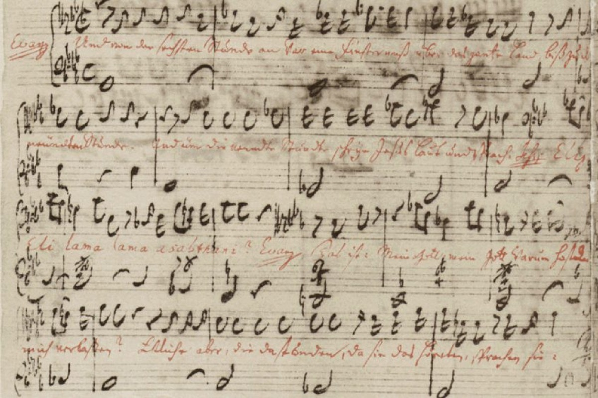

Good Friday 1727: the St. Matthew Passion

On Good Friday 1727 the Thomaskirche heard the largest music ever mounted within its walls. The date — 11 April — is the scholarly consensus rather than a certainty; 1729 was long assumed to be the premiere and remains the first documented performance, a distinction this timeline keeps honest. What is not in doubt is the object itself: the St. Matthew Passion, three hours of music for two complete choirs and two orchestras stationed apart, soloists, and a treble line floating a chorale over the immense opening chorus. The design is spatial and dialogic — one choir questioning, the other answering: Sehet! — Wen? — den Bräutigam — the congregation seated inside a conversation rather than before a performance. The libretto was built with his ablest collaborator, Picander, and the whole conception dwarfs anything Leipzig's Good Friday had imagined.
Where the John Passion of three years earlier is drama — swift, confrontational, ferocious in its crowd scenes — the Matthew is contemplation. The story pauses again and again for arias of unbearable tenderness: Erbarme dich, the alto pleading over a solo violin in the ruins of Peter's denial; Aus Liebe, suspended like held breath; Mache dich, mein Herze, rein, the burial turned into consolation. Threaded through the narrative, the chorale O Haupt voll Blut und Wunden returns five times, its harmonization darkening step by step as the story descends — the same melody, the congregation's own hymn, made to carry the accumulating weight.
Bach's own regard for the work is legible in a physical object. His fair-copy score is the most beautiful manuscript he ever made, and in it the Gospel words are ruled in red ink — scripture illuminated like a medieval codex, set apart from the poetry around it by the color of its letters. He did this for no other work. A man who wrote a masterpiece a week did not lavish calligraphy casually; the manuscript is his verdict on what he had made, delivered in the only review the piece would receive in his lifetime.
Because the contemporary reception was silence. Not one review, letter, or diary entry about the premiere survives — nothing. The only anecdote, secondhand and recorded decades later, has a congregant complaining that it sounded like opera. The work was performed a few more times under Bach's direction, and then not at all, for a hundred years. Sit with that: by broad consent the summit of Western sacred music entered the world unrecorded, was grumbled at once, and went to sleep. Whatever comfort artists take from posterity, Bach walked home from the Thomaskirche on that Good Friday with no evidence that anyone had understood what had just happened, and no reason to expect anyone ever would.
This is the timeline's central object, the one work the reader should track across all three arcs. In Arc I it is the summit toward which the cantata years climb, and the wellspring from which Bach drew the funeral music for his old prince Leopold — the Cöthen loyalty repaid from the Passion's own pages. In Arc II it is the sleeping giant, whose awakening under the twenty-year-old Mendelssohn in 1829 restarts the whole story and gives this timeline its second arc. And in Arc III it is simply the inheritance — the work through which most of the world first learns what Bach is. If the app had to carry one piece of music across everything, it carries this one: premiered to silence, dismissed as opera, asleep for a century, and waiting.
Continue with the era essay: Leipzig I: the cantata machine, or leap a century to the awakening: the Mendelssohn revival of 1829.
Autograph fair copy of BWV 244 (Bach Digital)
Gardiner, Music in the Castle of Heaven, ch. 11
Wolff, The Learned Musician, ch. 8
→ full bibliography & links